하네스와 두 종류의 메타 하네스
하네스는 모델 가중치 바깥에서 기억, 정보 검색, 프롬프트 순서, 도구 사용을 정하는 주변 코드예요. 슬라이드는 이걸 말의 마구(馬具)에 빗대요. 언어 모델이 힘센 말이라면 하네스는 그 힘을 원하는 쪽으로 이끄는 장치라는 거죠. 같은 모델을 써도 하네스를 어떻게 짜느냐에 따라 성능이 크게 달라진다는 게 이 연구의 출발점이에요.
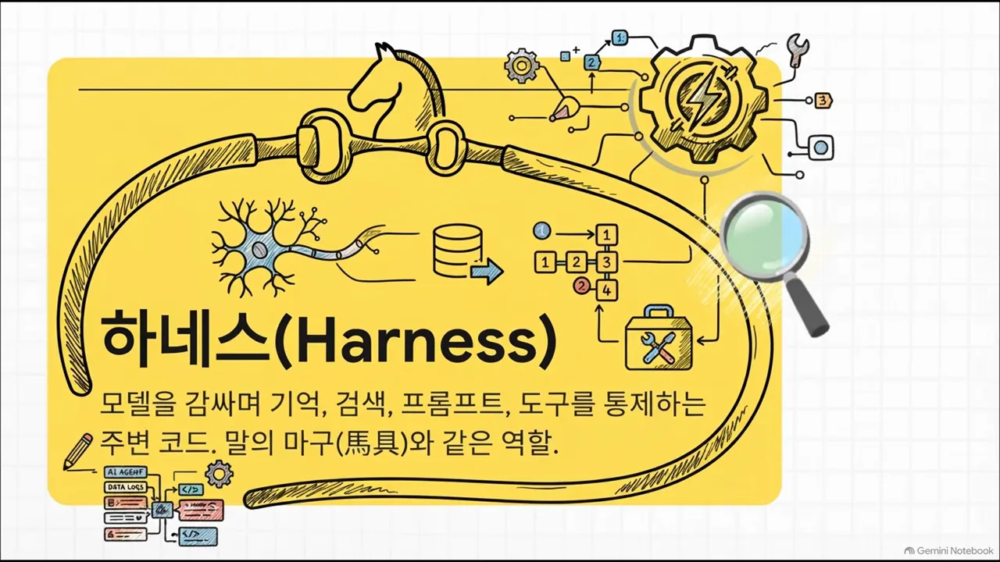
메타 하네스는 두 종류예요
'메타 하네스'라는 말은 두 가지를 가리켜요. 왼쪽 카드는 실행 중에 여러 에이전트를 조율하는 상위 층이에요. 지금까지 흔히 보던 런타임 관리자 방식이죠. 오른쪽 카드가 이 논문의 방식이에요. 사람 대신 에이전트가 하네스 코드를 다시 쓰는 루프예요.
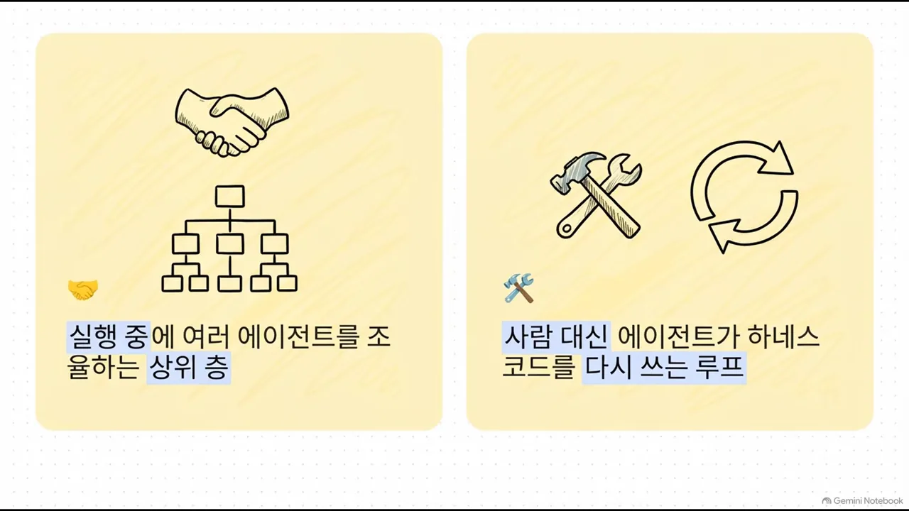
핵심은 실행 중에 개입하지 않는다는 점이에요. 에이전트는 별도의 오프라인 탐색 루프를 돌면서 자기를 감싼 통제 코드를 직접 뜯어고쳐요.
요약된 피드백이 원인을 숨겨요
기존 자가 개선 에이전트가 기대만큼 나아지지 않은 이유를 영상은 피드백 압축에서 찾아요. 최적화 도구가 에이전트에게 결과를 너무 줄여서 건네거든요. 슬라이드 문구 그대로, 압축이 여러 단계에 걸친 실패의 근본 원인을 숨겨요.
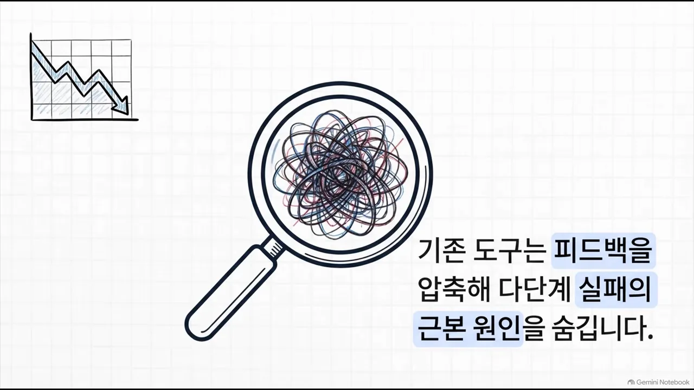
영상의 예가 이래요. 코드가 10단계 중 어딘가에서 망가졌는데 에이전트가 받는 건 '최종 점수 41.3' 한 줄이에요. 1단계 검색이 틀렸는지 마지막 단계가 꼬였는지 알 수 없어요. 아래 그림의 왼쪽이 이 상황이고, 오른쪽이 다음 섹션에서 볼 Meta-Harness의 방식이에요.
주는 정보량이 수백~수천 배 달라요
화면 표는 방법마다 반복 한 번에 주는 피드백과 그 양(MTok, 백만 토큰 단위)을 나란히 보여 줘요. 위 네 줄이 기존 방법이에요. 맨 아래 Meta-Harness 줄만 '코드, 점수, 전체 로그'를 주고 양이 10.0이에요. 표 위 막대그래프에 축을 끊은 표시(scale break)가 있는 것도 그 차이 때문이에요.
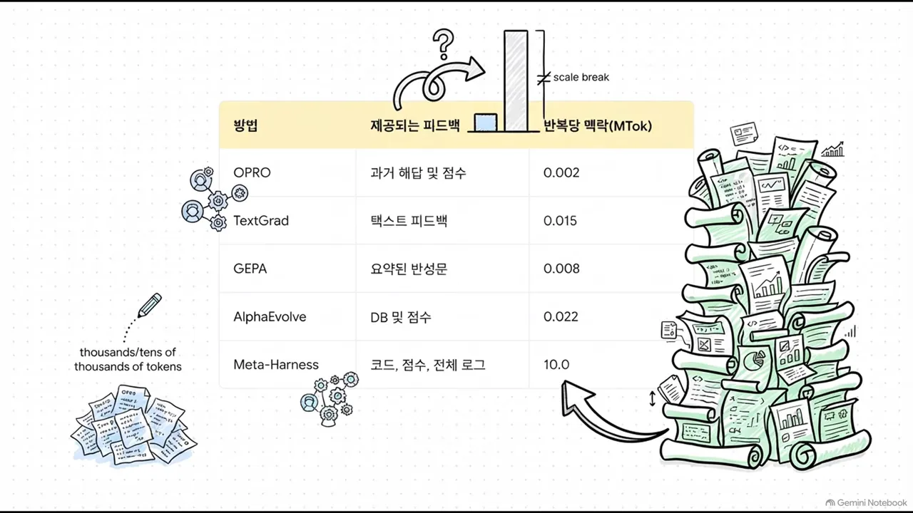
| 방법 | 제공되는 피드백 | 반복당 맥락(MTok) |
|---|---|---|
| OPRO(Optimization by PROmpting) | 과거 해답과 점수 | 0.002 |
| TextGrad | 텍스트 피드백 | 0.015 |
| GEPA(Genetic-Pareto) | 요약된 반성문 | 0.008 |
| AlphaEvolve | DB(Database)와 점수 | 0.022 |
| Meta-Harness | 코드, 점수, 전체 로그 | 10.0 |
프롬프트 대신 파일 시스템을 줘요
천만 토큰을 프롬프트 하나에 넣을 수는 없어요. 연구진의 답을 영상은 한 문장으로 소개해요. 슬라이드 왼쪽의 책장이 '외워야 할 도서관 전체'이고, 위쪽 카드가 '출입증'이에요.
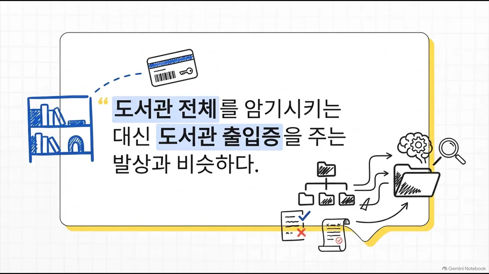
평가 → 기록 → 탐색 → 개선
안에서 도는 루프는 네 단계예요. 슬라이드 왼쪽부터 평가(후보 하네스를 벤치마크 문제로 실행), 기록(코드·점수·로그를 파일로 저장), 탐색(제안자가 grep과 cat으로 로그 검색), 개선(새 후보 하네스 코드 작성) 순서예요. 맨 왼쪽 아래 순환 화살표가 다시 평가로 돌아간다는 표시예요.

탐색 단계는 사람 개발자가 낯선 코드를 디버깅하는 모습과 같아요. 로그를 grep으로 뒤져 에러 원인을 찾고, 그걸 바탕으로 다음 버전 코드를 짜요. 이 과정 전체가 오프라인에서 끊임없이 돌아가요.
에이전트는 점수보다 기록을 열었어요
에이전트가 실제로 어떤 파일을 열었는지 세어 본 결과예요. 도넛 오른쪽 범례를 보면 소스 코드 41%, 실행 로그 40%로 둘이 대부분이고, 점수 요약은 6%뿐이에요. 나머지 13%는 기타 파일이에요.
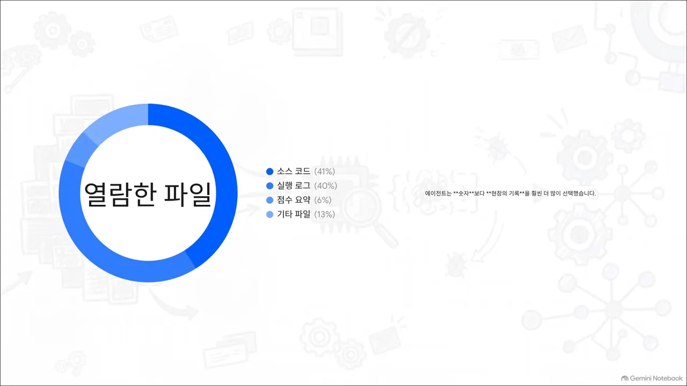
숫자로 본 효과
먼저 절제 실험이에요. 텍스트 분류 과제에서 제안자에게 주는 정보만 바꿔 봤어요. 표의 세 줄이 '점수만', '점수 + LLM 요약', '점수 + 원본 로그'예요. 주황색으로 칠한 맨 아래 줄만 숫자가 크게 뛰어요.

| 받은 피드백 | 중앙값 정확도 | 최고 정확도 |
|---|---|---|
| 점수만 | 34.6 | 41.3 |
| 점수 + LLM 요약 | 34.9 | 38.7 |
| 점수 + 원본 로그 | 50.0 | 56.7 |
요약은 중앙값을 0.3점 올리는 데 그쳤어요. 원본 로그를 주자 중앙값이 15점 넘게 올랐어요. 영상은 친절한 요약이 문제 해결에 필요한 디테일을 지워 왔다는 증거로 읽어요.
세 가지 과제의 결과
텍스트 분류에서는 기존 최고 수준의 맥락 관리 기법보다 7.7점 높았어요. 슬라이드 왼쪽의 '3/4'와 아래 '1/4 size' 표시가 맥락을 4분의 1만 썼다는 뜻이에요.
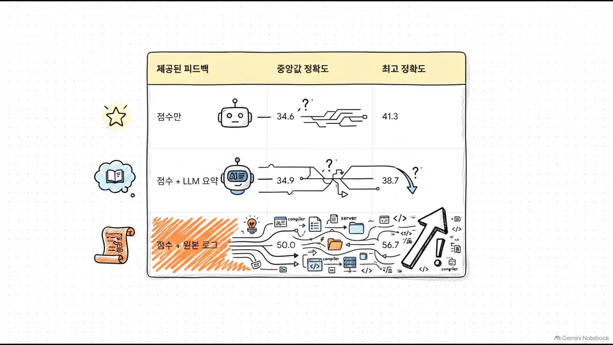
수학 추론에서는 찾아낸 하네스를 탐색 때 한 번도 쓰지 않은 다섯 개의 다른 언어 모델에 붙였어요. 오른쪽 아래 문구가 그 조건이에요. 평균 4.7점 올랐어요. 특정 모델에 억지로 끼워 맞춘 게 아니라 여러 모델에 통하는 개선이라는 뜻이에요.
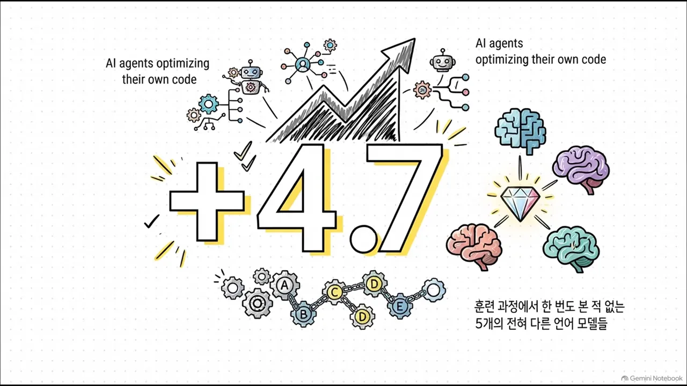
TerminalBench-2와 80줄짜리 개선
코딩 에이전트 벤치마크 TerminalBench-2 슬라이드는 시상대 하나로 성과를 보여 줘요. 영상에 따르면 Claude Haiku 4.5로는 1위, Opus 4.6으로는 2위였어요. 양옆의 'Code Improvements'와 'Time Efficiency'는 아래에서 설명할 개선 내용을 가리켜요.
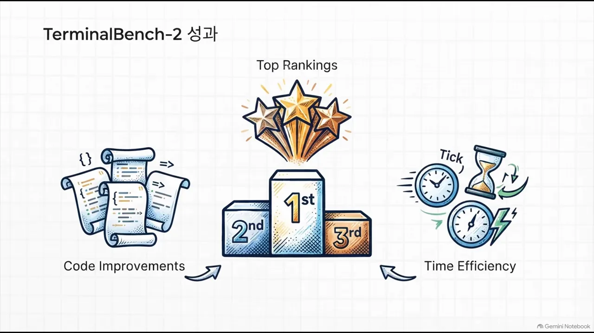
발표자가 가장 인상적이라고 꼽은 건 에이전트가 찾은 해결책이에요. 로그를 읽어 보니 매번 파이썬이 깔려 있는지 확인하느라 턴을 날리고 있었어요. 그래서 처음부터 실행 환경을 점검하는 80줄짜리 코드를 끼워 넣었어요. 점수만 봤다면 찾기 어려운 개선이에요.
한계, 그리고 원본 로그를 버리지 마세요
들뜨기 전에 짚을 한계도 있어요. 슬라이드는 네 아이콘으로 정리해요. 왼쪽부터 탐색 문제와 평가 문제의 중복, 89개 과제 중 7개에만 몰린 향상, 단일 제안자 모델 의존, 20번 반복에 드는 큰 컴퓨팅 비용이에요.
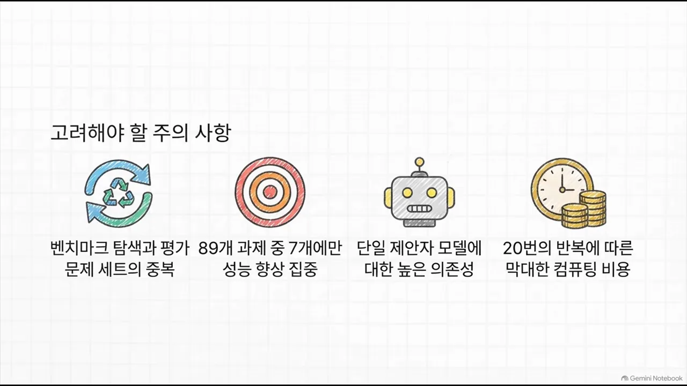
- 탐색과 평가 문제가 겹쳐요 — 코딩 벤치마크에서 탐색에 쓴 문제와 최종 평가 문제가 분리되지 않았어요.
- 향상이 일부 과제에 몰렸어요 — 89개 과제 중 큰 향상은 7개에 집중됐어요.
- 제안자 모델 하나에 기대요 — 긴 맥락을 잘 다루는 Claude Opus 하나에 크게 의존했어요.
- 비용이 숨어 있어요 — 파일 수십 개를 여는 무거운 에이전트를 20번 반복해 돌렸으니 컴퓨팅 비용이 컸을 거라고 발표자는 추정해요.
원본 로그를 버리지 마세요
영상이 딱 하나만 챙겨 가라며 꼽은 문장이에요. 슬라이드에서 '압축되지 않은'과 '실패 기록'에 밑줄처럼 색을 칠해 강조했어요.
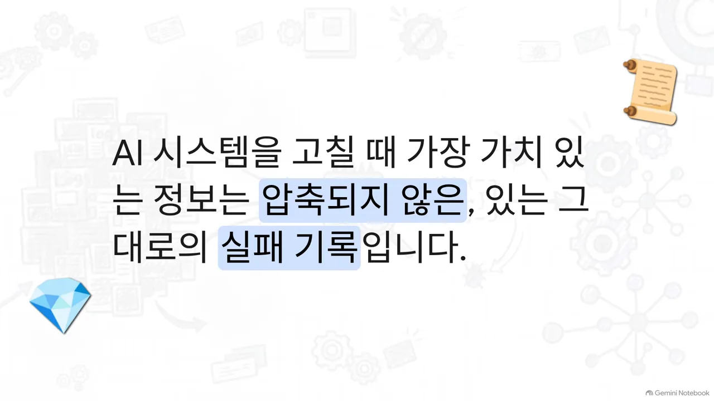
LLM이 제가 분석해 보니 이렇습니다 하고 친절하게 요약해 주는 순간 정작 근본 원인을 파헤칠 수 있는 가장 중요한 디테일들은 모두 허공으로 날아가 버리는 겁니다.
— 영상 07:52
마지막 슬라이드는 질문으로 끝나요. 위쪽 '로그의 바다'가 '프롬프트'라고 적힌 깔때기를 지나 물방울 하나로 줄어들고, 나머지는 오른쪽 쓰레기통으로 가요. 에이전트 로그를 억지로 쥐어짜 프롬프트에 밀어 넣고 있다면, 가장 귀한 데이터를 버리고 있는 건 아닌지 돌아보라는 거예요.
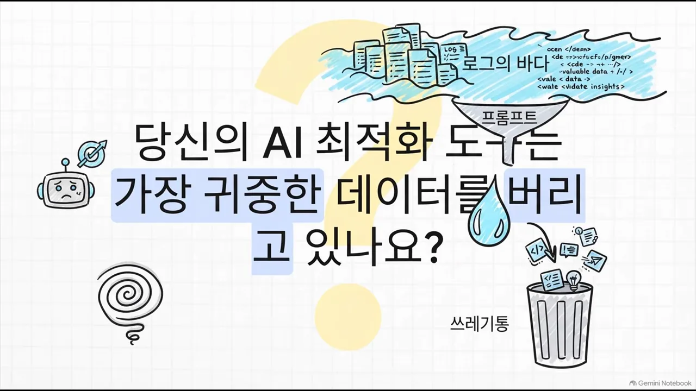